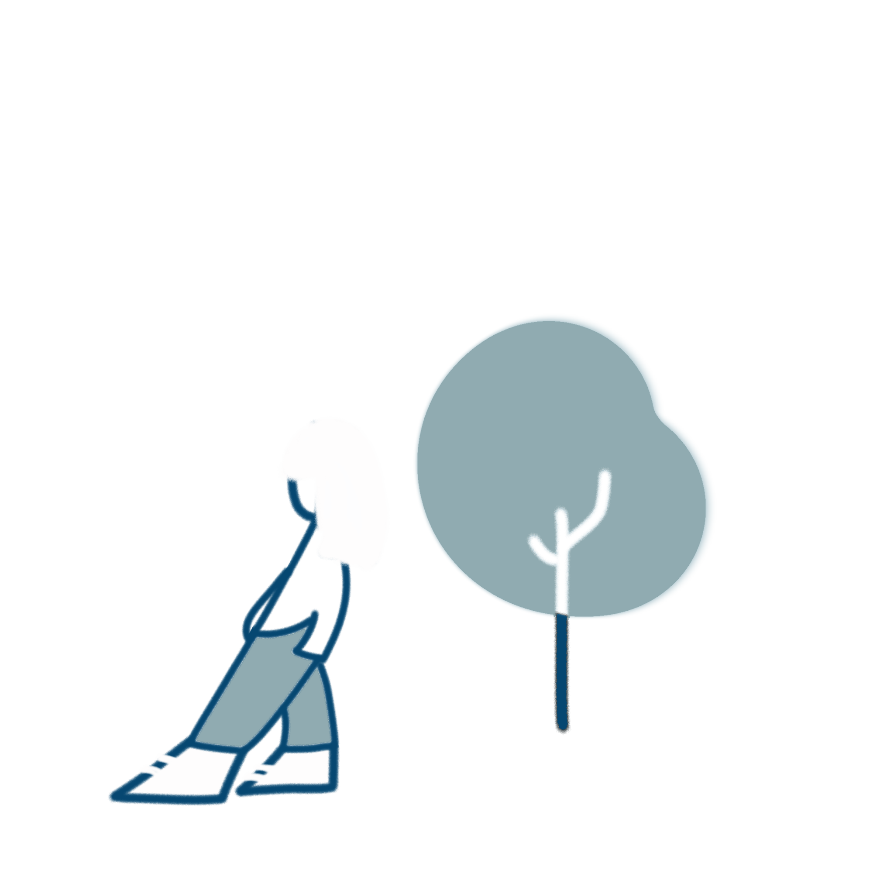

Mulai Sekarang
Klasifikasi
Sampahmu
Seret & lepas gambar di sini
atau klik untuk memilih dari galeri
atau
Gambar tidak disimpan di server kami
Foto sampahmu, dan biarkan AI kami membantu menentukan jenisnya sekaligus cara terbaik untuk mengelolanya.

Ambil foto sampah langsung dari kamera atau unggah dari galeri perangkatmu.
Model machine learning kami menganalisis gambar untuk mendeteksi jenis sampah.
Dapatkan hasil klasifikasi beserta panduan pengelolaan sampah yang tepat.
Seret & lepas gambar di sini
atau klik untuk memilih dari galeri
Gambar tidak disimpan di server kami
Sampah yang berasal dari makhluk hidup dan dapat terurai secara alami.
Sampah buatan manusia yang butuh waktu lama untuk terurai.